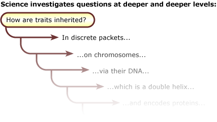

The process of science, as represented here, is the opposite of "cookbook" (to see the full complexity of the process, roll your mouse over each element). In contrast to the linear steps of the simplified scientific method, this process is non-linear:
- The process of science is iterative.
Science circles back on itself so that useful ideas are built upon and used to learn even more about the natural world. This often means that successive investigations of a topic lead back to the same question, but at deeper and deeper levels. Let's begin with the basic question of how biological inheritance works. In the mid-1800s, Gregor Mendel showed that inheritance is particulate - that information is passed along in discrete packets that cannot be diluted. In the early 1900s, Walter Sutton and Theodor Boveri (among others) helped show that those particles of inheritance, today known as genes, were located on chromosomes. Experiments by Frederick Griffith, Oswald Avery, and many others soon elaborated on this understanding by showing that it was the DNA in chromosomes which carries genetic information. And then in 1953, James Watson and Francis Crick, again aided by the work of many others, provided an even more detailed understanding of inheritance by outlining the molecular structure of DNA. Still later in the 1960s, Marshall Nirenberg, Heinrich Matthaei, and others built upon this work to unravel the molecular code that allows DNA to encode proteins. And it doesn't stop there. Biologists have continued to deepen and extend our understanding of genes, how they are controlled, how patterns of control themselves are inherited, and how they produce the physical traits that pass from generation to generation.

- The process of science is not predetermined.
Any point in the process leads to many possible next steps, and where that next step leads could be a surprise. For example, instead of leading to a conclusion about tectonic movement, testing an idea about plate tectonics could lead to an observation of an unexpected rock layer. And that rock layer could trigger an interest in marine extinctions, which could spark a question about the dinosaur extinction - which might take the investigator off in an entirely new direction.
At first this process might seem overwhelming. Even within the scope of a single investigation, science may involve many different people engaged in all sorts of different activities in different orders and at different points in time - it is simply much more dynamic, flexible, unpredictable, and rich than many textbooks represent it as. But don't panic! The scientific process may be complex, but the details are less important than the big picture ...